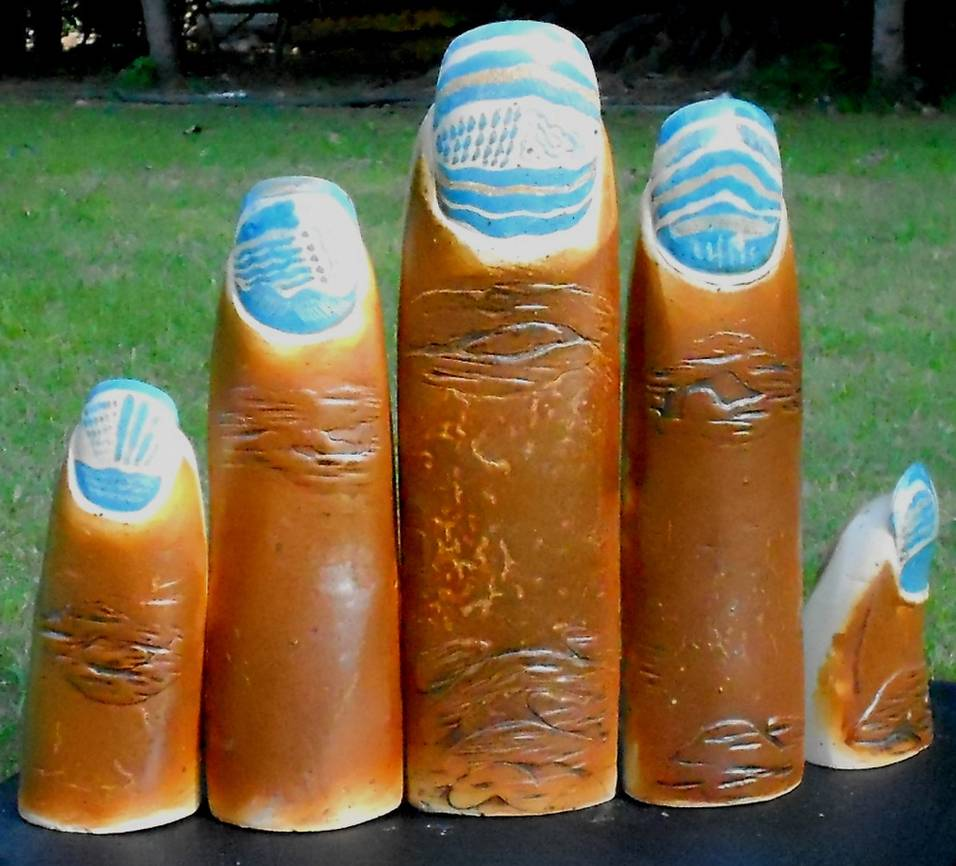

Emerging Artist:Soumen Basu
Seaweed III

Ceramic with Iron Bowl & Nut Bolts
Dimensions - 38" X 11" & 20" X 20"
2018
Nature and mankind collapse into each
other in this piece as this sculpture refers
both to living breathing objects as well as
manmade inanimate objects. The iron nails
form the base of this piece which refers to
a creature which looks like it is part of the
moist earth. The metal which changed the
face of civilizations with its strength is
combined with the nail whose purpose is to
hold things together. So what is the purpose
of these nails which are just hammered in
at random? The folds of the sculpture part
to reveal a creature with marks resembling
a lowly worm. The worm which spends its
life underground lives and dies an
unremarkable life yet the combination of
the iron nails with this creature hints at the
innate strength and power of even the
lowliest of creations. The use of earthy tones
combined with the use of bright red of the
sun works to symbolize the coming together
of earth and metal. Together they reflect the
undeniable force of the elements.
Raiku & Ceramic
Dimensions - 40" X 20" & 42" X 26"
2020
At a first glance this sculpture evokes the image of
a pen stand with a feather and an ink pot. It is an
everyday object perhaps from a bygone era but
one which is still retained in the minds of the
viewers. It is also a stationary object but the
feather seems to be fluttering in the wind creating
a sense of movement. This movement also brings
to mind the sails of a ship holding its own against
strong winds. This piece has a weathered look
with the irregular waves which mimic the image
of a sail which has been on numerous journeys
and has borne a silent witness to innumerable
stories. The choice of the muted colours further
reinforces the idea of a quiet and innate strength.
While the curve of the feather like sculpture
expresses the presence of an opposing force which
stands in the way of any possible movement of the
object. The fact that the sculpture still stands
emphasizes an intrinsic strength in the face of the
any resistance. This dichotomy of mobility vs
immobility is what makes this sculpture an
interesting piece.
Tree
Tree , Soumen Basu ,
2020
Ceramic
Dimensions - 40" X 24" & 32" X 14"
2020
This piece represents a union of flora and
fauna, a combination of the calmness and
persistence of a tree and the unpredictable
fire of a dragon like creature. It gives the
impression of a tail of a dragon like creature
full of blades entering into the depths of the
earth yet it also evokes the image of a
formidable tree with its branches spreading
out. The piece is also full of oval shaped
objects at regular intervals. This recalls the
picture of an egg which holds life within it,
perhaps the egg of the dragon like creature at
the same time it looks a pine cone which
falls to the ground in the autumn season as
life diminishes from it. If we see the tree, it
represents an unyielding force which keeps
it grounded and if we see the dragon like
creature we see the indomitable force which
keeps it in motion. Hence, this piece has a
mythical quality to it where both the tree
and dragon like creature combine in a classic
combination of the elemental fire and earth
creating a new form of cosmic force.
Kaleidoscope
Soumen Basu ,
2020
Ceramic
Dimensions - 18" X 20" & 25" X 8"
2020
This piece comprises of multiple circles connected
together at seemingly random points. Beginning
with the largest circle at the base it ascends towards
the heaven as the circle gets smaller with each
connection. While circle denotes infinity there is
a sense of finiteness in this piece especially if one
considers the use of colours. The largest circle at the
bottom is full of vivid colours drawn which sharp
and confident strokes. This represents a sense of
energy perhaps of a hot headed youth. The second
circle is slightly smaller and here the vivid colour
of red is m aking way for the subdued and dull
colour at the centre. Perhaps life like the colour red
is ebbing away as youth is fading away. The top
most circle is also the smallest. Here, the absence
of any bright colour is glaring. Life has completed
its journey and we have come to the end where
brightness has made way for a calm and pale cream.
There are no sharp strokes of colours and everything
just flows into a sort of drabness waiting to reach
higher plane. Birth and death move hand in hand
and life has come full circle in this piece.
Soumen Basu ,
2020
Medium - oil on canvas
Dimensions - 18" X 20" & 38" X 11"
2020
Does man mimic nature? Are manmade objects inspired by the innumerable elements found in nature?
We can find our answer in this piece titled seaweed which evokes the image of a ship. The structure
rises with each fold resembling a hull, mast and sails of a ship. This is topped with a structure which
strongly resembles a look out of a ship with its occupants gazing at the unending ocean. The vivid blue
and green with a splash of red reminds the viewer of the serenity of the ocean combined with the renewal
of green. The use of red adds the element of energy to this piece. We often associate red with fire and
anger but in this piece the use of red add to the overall harmony reflecting a primal force rather than
a destructive and violent force. The seaweed like structure lies on what resembles a creature from the
sea. The smooth line of this creature and the curve recalls a Viking ship further reinforcing the idea
of how man mimics nature. This piece is a symbol of the knowledge and inspiration found in nature.
Soumen Basu,
2019
Medium - oil on canvas
Dimensions - 34" X 28" & 39" X 20"
2019